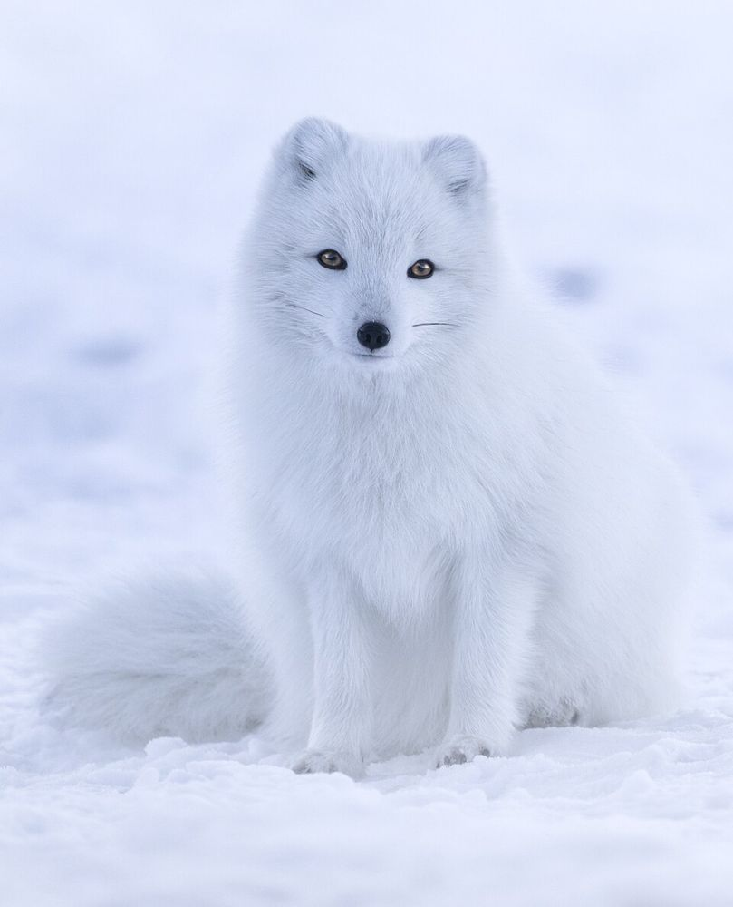
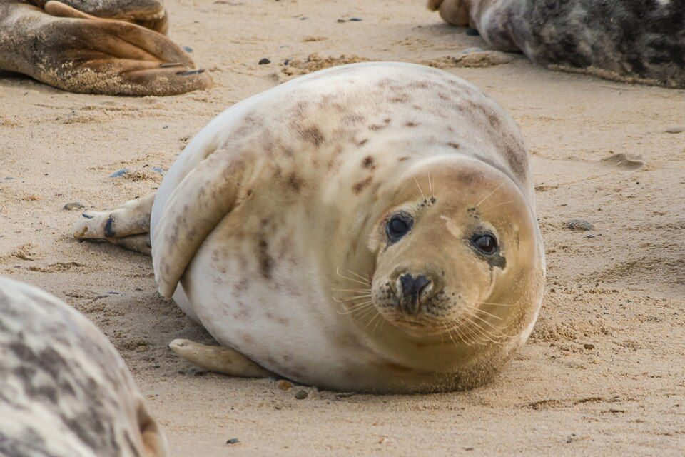
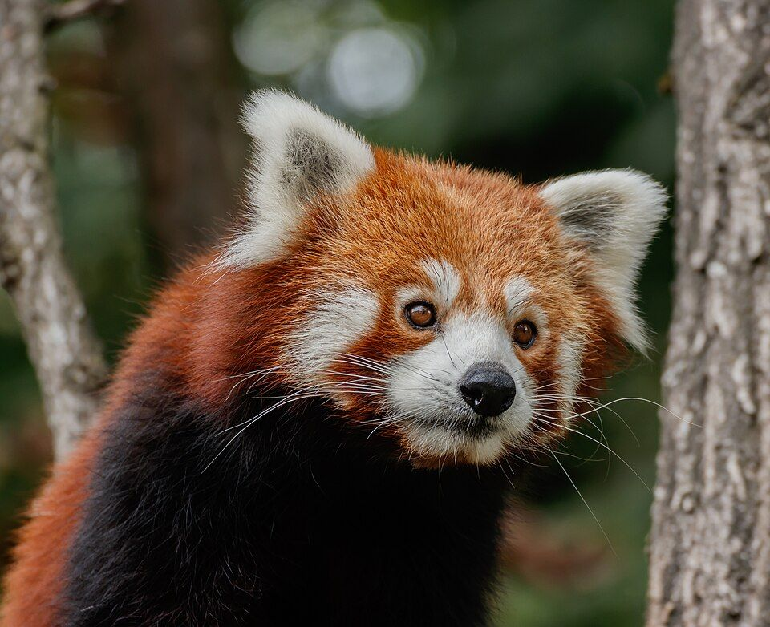
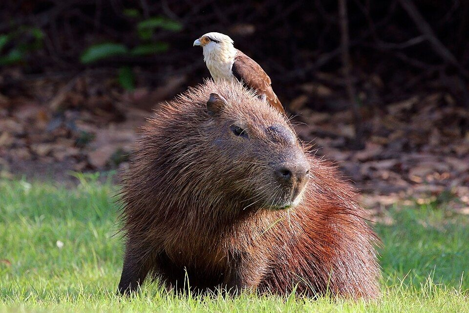
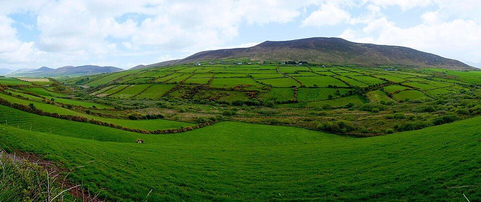
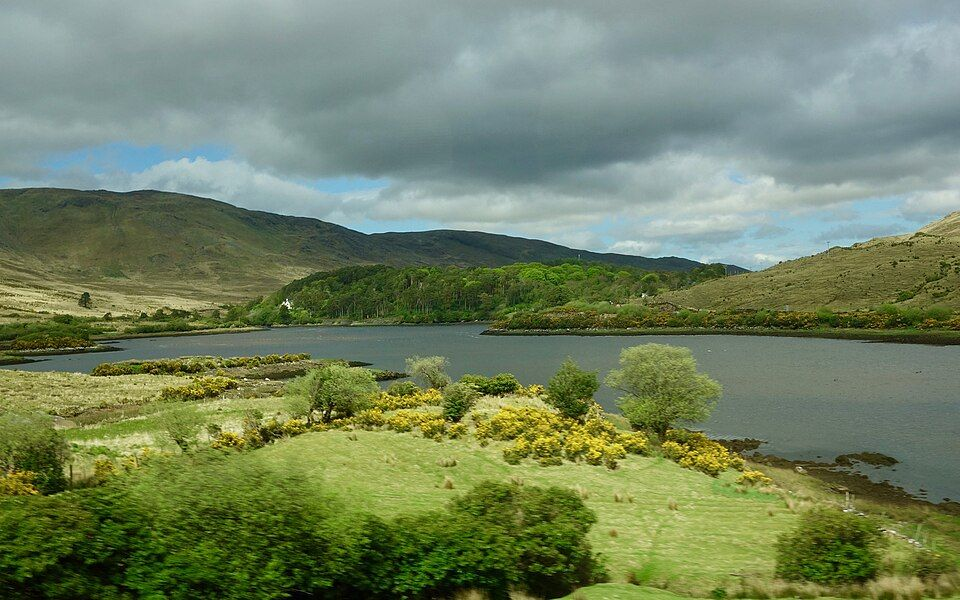
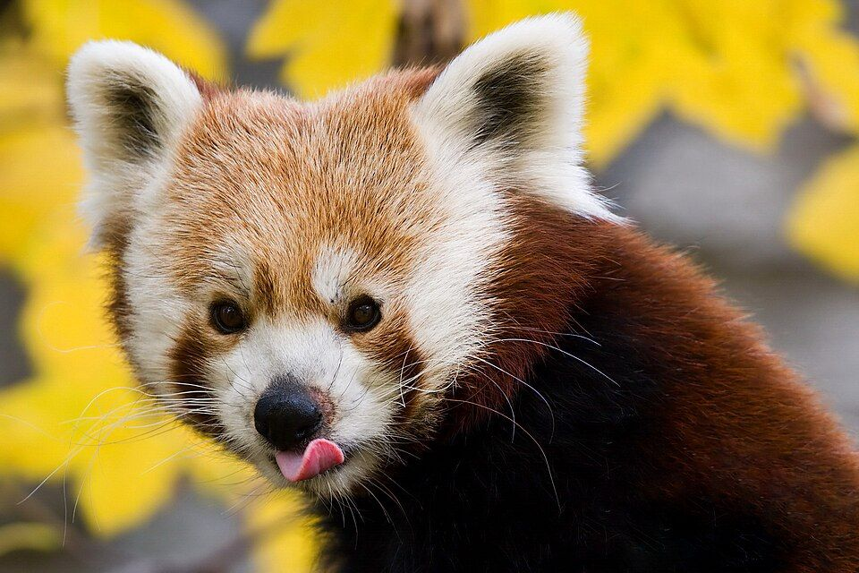

Emilly, voici une simulation des trois épreuves écrites de l'AQA GCSE French, niveau Higher, sur le modèle des sujets officiels AQA (spécification 8652). Chaque épreuve est deux fois plus courte que le jour de l'examen, mais les types de questions, les consignes en anglais et les règles sont les mêmes. Fais chaque épreuve d'une traite, sans dictionnaire : clique sur « Commencer », le chronomètre démarre en haut de l'écran. Quand tu as fini, clique sur « Terminer et corriger » : tu verras ta note, les bonnes réponses, les transcriptions, les traductions et une explication pour chaque question.
Emilly, here is a mock of the three written AQA GCSE French Higher papers, modelled on AQA's official papers (specification 8652). Each paper is half as long as on exam day, but the question types, the English instructions and the rules are the same. Do each paper in one sitting, without a dictionary: tap “Commencer” and the timer starts at the top of the screen. When you have finished, tap “Terminer et corriger”: you will see your mark, the right answers, the transcripts, the translations and an explanation for each question.
Answer all questions. Answer the questions in Section A in English.
You must not use a dictionary.
Use the first minutes to read the questions before you listen.
Each recording in Section A is played twice.
Clique sur ▶ pour écouter chaque enregistrement. Le compteur t'indique combien d'écoutes il te reste. Après la correction, tu pourras réécouter sans limite et lire la transcription avec la traduction.
Tap ▶ to play each recording. The counter shows how many plays you have left. After marking, you can listen again as often as you like and read the transcript with its translation.

Un renard polaire · se reposer, c'est aussi la santé
Healthy living
Hugo is talking about his lifestyle. What is his opinion of each aspect? Write P for a positive opinion, N for a negative opinion, P+N for a positive and negative opinion.
You will hear the recording twice.
01
Exercise
Pourquoi ? « ça me détend vraiment » = it really relaxes me : opinion seulement positive.
“ça me détend” = it relaxes me: positive only.
[1 mark]
02
Sleep
Pourquoi ? « beaucoup trop tard », « épuisé » (exhausted) : seulement négatif. « Par contre » annonce le changement d'opinion.
“far too late”, “exhausted”: negative only. “Par contre” signals the change of opinion.
[1 mark]
03
Diet
Pourquoi ? Positif : « plein de fruits et de légumes » ; négatif : « je ne peux pas résister aux bonbons ». Le mot mais sépare les deux.
Positive: lots of fruit and veg; negative: can't resist sweets. “Mais” separates the two.
[1 mark]
Transcription · transcript and translation
Hugo
Pour rester en forme, je fais du vélo trois fois par semaine : ça me détend vraiment après les cours. Q01
To stay fit, I cycle three times a week: it really relaxes me after lessons.
Hugo
Par contre, je me couche beaucoup trop tard à cause de mon portable, et le matin, je suis complètement épuisé. Q02
On the other hand, I go to bed far too late because of my phone, and in the morning I'm completely exhausted.
Hugo
Côté alimentation, je mange plein de fruits et de légumes, mais j'avoue que je ne peux pas résister aux bonbons. Q03
As for food, I eat lots of fruit and vegetables, but I admit I can't resist sweets.
A festival
You hear an advert on French radio. Choose the correct answer and write A, B or C.
You will hear the recording twice.
04
When does the festival take place?
Pourquoi ? « Du 5 au 8 décembre » = du 5 au 8 décembre, donc au début du mois.
From 5th to 8th December = beginning of December.
[1 mark]
05
What does the advert recommend?
Pourquoi ? « prenez plutôt le métro ou le tramway » = les transports en commun. Attention au piège : on parle de bougies, mais on ne conseille pas d'en acheter.
“take the metro or the tram instead” = public transport. Trap: candles are mentioned, but not buying them.
[1 mark]
Transcription · transcript and translation
Radio
Du 5 au 8 décembre, ne manquez pas la Fête des Lumières à Lyon ! Q04
From 5th to 8th December, don't miss the Festival of Lights in Lyon!
Radio
Pendant quatre soirées, les monuments de la ville s'illuminent grâce à des artistes venus du monde entier.
For four evenings, the city's monuments light up thanks to artists from all over the world.
Radio
Les rues du centre seront fermées aux voitures : prenez plutôt le métro ou le tramway. Q05
The streets in the centre will be closed to cars: take the metro or the tram instead.
Radio
Et n'oubliez pas : la tradition, c'est de poser une bougie sur sa fenêtre le soir du 8 décembre.
And don't forget: the tradition is to put a candle on your window on the evening of 8th December.

Un phoque sur une plage
Volunteering
A journalist is interviewing Camille, a young volunteer. Answer the questions in English.
You will hear the recording twice.
06
Give two things the volunteers do.
Pourquoi ?ramasser les déchets = pick up litter ; trier = to sort (pour recycler).
ramasser = pick up; trier = sort.
[2 marks]
07
(a) Why did Camille start volunteering?
Pourquoi ? « j'ai vu un documentaire sur la pollution des océans ».
She saw a documentary about ocean pollution.
[1 mark]
07
(b) What would she like to do next summer?
Pourquoi ? Il faut les deux idées : le Canada et les forêts. « j'aimerais partir » = conditionnel = I'd like to go.
You need both details: Canada and the forests.
[1 mark]
Transcription · transcript and translation
Journaliste
Camille, vous êtes bénévole dans une association en Bretagne. Qu'est-ce que vous faites exactement ?
Camille, you volunteer for an association in Brittany. What exactly do you do?
Camille
Le samedi matin, on ramasse les déchets sur les plages, et l'après-midi, on explique aux touristes comment trier leurs déchets. Q06
On Saturday mornings we pick up litter on the beaches, and in the afternoon we explain to tourists how to sort their rubbish.
Journaliste
Pourquoi avez-vous commencé ?
Why did you start?
Camille
L'année dernière, j'ai vu un documentaire sur la pollution des océans, et j'ai été choquée par les images des tortues prises dans le plastique. Q07
Last year I saw a documentary about ocean pollution, and I was shocked by the pictures of turtles caught in plastic.
Journaliste
Et vos projets ?
And your plans?
Camille
L'été prochain, j'aimerais partir au Canada pour aider à protéger les forêts. Q07
Next summer I'd like to go to Canada to help protect the forests.
Radio news
Listen to these two news items. For each one, choose the two correct statements.
You will hear the recording twice.
08
Teenagers and screens
Choose two letters.
Pourquoi ? « ce matin » (pas la semaine dernière) ; « la moitié » = half ; « moins de temps » = less time, pas plus.
this morning, not last week; la moitié = half; moins = less.
[2 marks]
09
Train travel
Choose two letters.
Pourquoi ? « la moitié des TGV » (pas tous) ; reporter un voyage = le faire plus tard (put off) ; « gratuitement » = free of charge.
half, not all; reporter = postpone; gratuitement = free.
[2 marks]
Transcription · transcript and translation
Info 1
Selon une enquête publiée ce matin, les adolescents français passent en moyenne cinq heures par jour devant un écran. Q08
According to a survey published this morning, French teenagers spend on average five hours a day in front of a screen.
Info 1
La moitié d'entre eux avouent consulter leur téléphone pendant la nuit.
Half of them admit checking their phone during the night.
Info 1
Pourtant, quatre jeunes sur dix aimeraient passer moins de temps sur les réseaux sociaux.
However, four young people out of ten would like to spend less time on social media.
Info 2
Mauvaise nouvelle pour les voyageurs : à cause d'une grève, la moitié des TGV entre Paris et Marseille seront annulés demain. Q09
Bad news for travellers: because of a strike, half of the high-speed trains between Paris and Marseille will be cancelled tomorrow.
Info 2
La SNCF conseille aux passagers de reporter leur voyage.
The SNCF advises passengers to postpone their journey.
Info 2
Les billets pourront être échangés ou remboursés gratuitement.
Tickets can be exchanged or refunded free of charge.
Les falaises de Moher, Irlande
A YouTuber
Listen to this interview with Inès, a French YouTuber. Answer the questions in English.
You will hear the recording twice.
10
When she was a child, Inès wanted to be a .
Pourquoi ? « vétérinaire » = vet. « Quand j'étais petite, je voulais… » : imparfait pour l'enfance.
vétérinaire = vet.
[1 mark]
10
At the age of 15, she started filming her in Ireland.
Pourquoi ? « mes randonnées » = my hikes / walks.
randonnées = hikes.
[1 mark]
11
(a) What does Inès like most about her job?
Pourquoi ? « recevoir des messages de gens qui ont découvert de nouveaux paysages grâce à moi ».
Receiving messages from people who discovered landscapes thanks to her.
[1 mark]
11
(b) What is the only disadvantage?
Pourquoi ? « je n'ai presque plus de vie privée » : ne… plus = no longer / not any more ; presque = almost.
ne… plus = no longer; presque = almost.
[1 mark]
Transcription · transcript and translation
Journaliste
Inès, vous avez toujours voulu être youtubeuse ?
Inès, have you always wanted to be a YouTuber?
Inès
Pas du tout ! Quand j'étais petite, je voulais devenir vétérinaire, parce que j'adorais les animaux. Q10
Not at all! When I was little, I wanted to become a vet, because I loved animals.
Inès
Mais à quinze ans, j'ai commencé à filmer mes randonnées en Irlande, et mes vidéos ont eu un succès incroyable. Q10
But at fifteen I started filming my hikes in Ireland, and my videos were incredibly successful.
Journaliste
Qu'est-ce qui vous plaît le plus dans ce métier ?
What do you like most about this job?
Inès
Ce qui me plaît le plus, c'est de recevoir des messages de gens qui ont découvert de nouveaux paysages grâce à moi. Q11
What I like most is receiving messages from people who have discovered new landscapes thanks to me.
Inès
Le seul inconvénient, c'est que je n'ai presque plus de vie privée. Q11
The only drawback is that I have almost no private life any more.
A summer job
Nathan is talking to his mother. Choose the correct answer and write A, B or C.
You will hear the recording twice.
12
What is the advantage of the job?
Pourquoi ? « Ce n'est pas très bien payé » élimine A. « nourri et logé » = food and accommodation provided.
“not very well paid” rules out A; nourri et logé = fed and housed.
[1 mark]
12
What will he spend his money on?
Pourquoi ? « mon permis de conduire » = my driving licence. Il ne parle pas d'acheter une voiture.
permis de conduire = driving licence, not a car.
[1 mark]
12
Next year, Nathan plans to…
Pourquoi ? « je compte faire un apprentissage dans l'hôtellerie » ; « l'université, ce n'est pas pour moi » élimine B.
je compte = I intend to; university is not for him.
[1 mark]
Transcription · transcript and translation
La mère
Alors Nathan, tu as trouvé un petit boulot pour l'été ?
So Nathan, have you found a job for the summer?
Nathan
Oui ! Je vais travailler dans un café au bord de la mer, à Biarritz. Ce n'est pas très bien payé, mais je serai nourri et logé. Q12
Yes! I'm going to work in a café by the sea, in Biarritz. It's not very well paid, but my food and accommodation will be provided.
La mère
Et qu'est-ce que tu vas faire de ton argent ?
And what are you going to do with your money?
Nathan
Avec l'argent que je gagnerai, je pourrai enfin payer mon permis de conduire. Q12
With the money I earn, I'll finally be able to pay for my driving licence.
La mère
Et après le lycée ?
And after sixth form?
Nathan
L'année prochaine, je compte faire un apprentissage dans l'hôtellerie. L'université, ce n'est pas pour moi. Q12
Next year I intend to do an apprenticeship in the hotel industry. University isn't for me.
Section B · Dictation
You will now hear three short sentences. Each sentence is read three times: first as a complete sentence, then in short sections, then again as a complete sentence. Write down exactly what you hear, in French. Use your knowledge of French sounds and grammar to make sure that what you write makes sense. Check carefully that your spelling is accurate.
Chaque piste contient déjà les trois lectures : une seule écoute suffit, comme le jour de l'examen (tu as droit à 2 écoutes ici).
Each track already contains the three readings: one play is enough, as in the exam (you may play it twice here).
13
Last weekend we went to the cinema with my cousins.
Pourquoi ? Passé composé avec être : nous sommes allés (accord en -és) ; mes cousines : féminin pluriel (-es).
[2 marks]
14
We must protect the animals that live in the forest.
Pourquoi ? Après il faut → infinitif (protéger, pas « protégé ») ; ils vivent : -ent muet ; la forêt : accent circonflexe.
[2 marks]
15
If I had more time, I would do voluntary work.
Pourquoi ?Si + imparfait → conditionnel : j'avais / je ferais, toutes deux en -ais à la 1re personne.
[2 marks]
PAPER 3
Reading
Compréhension de l'écrit
Simulation · 30 min · 28 marks
Jour de l'examen · 1 h · 50 marks
Instructions
Answer all questions. Answer the questions in Section A in English.
You must not use a dictionary.
Section B: translate into English.
Après la correction, la traduction anglaise de chaque texte apparaît sous le français.
After marking, the English translation of each text appears under the French.
News headlines
Read these French newspaper headlines. Which headline matches each event? Write the correct letter.

Un panda roux
A
Record de chaleur : Paris étouffe sous 40 degrés
Heat record: Paris swelters at 40 degrees
B
Un lycéen de Lille invente une application contre le gaspillage alimentaire
A Lille secondary-school pupil invents an app against food waste
C
La Fête de la musique attire un million de personnes
The Fête de la musique attracts a million people
D
Un bébé panda roux est né au zoo de Beauval
A baby red panda has been born at Beauval zoo
E
Grève des enseignants : les écoles fermées jeudi
Teachers' strike: schools closed on Thursday
01
A young person has created something to reduce waste.
Pourquoi ?invente = invents ; le gaspillage = waste ; un lycéen est un jeune.
invente = invents; gaspillage = waste.
[1 mark]
02
An animal has been born.
Pourquoi ?est né = was born (naître, passé composé avec être).
est né = was born.
[1 mark]
03
Pupils will not have lessons.
Pourquoi ?les écoles fermées = schools closed ; une grève = a strike.
écoles fermées = schools closed.
[1 mark]
Social media
Read these posts on a website. What is each person's opinion of social media? Write P for positive, N for negative, P+N for positive and negative.
Malik
Grâce aux réseaux sociaux, je reste en contact avec ma famille au Sénégal. C'est génial !
Thanks to social media, I stay in touch with my family in Senegal. It's great!
Jade
Je passe des heures à comparer ma vie à celle des influenceurs, et ça me rend triste.
I spend hours comparing my life with influencers' lives, and it makes me sad.
Théo
C'est pratique pour s'informer, mais on y trouve aussi beaucoup de fausses nouvelles.
It's handy for keeping informed, but you also find a lot of fake news there.
Zoé
Depuis que j'ai supprimé Instagram, je dors mieux et je lis davantage.
Since I deleted Instagram, I sleep better and read more.
04
Malik
Pourquoi ?Grâce à = thanks to + « génial » : positif.
grâce à = thanks to.
[1 mark]
05
Jade
Pourquoi ? « ça me rend triste » = it makes me sad.
Pourquoi ? Elle va mieux sans Instagram : son opinion des réseaux sociaux est donc négative. Question piège : la phrase « sonne » positive.
She is better without Instagram, so her opinion of social media is negative.
[1 mark]
Living in Montréal
Read this article about Sarah. Answer the questions in English.
Il y a deux ans, Sarah a quitté Lyon pour s'installer à Montréal avec ses parents.Two years ago, Sarah left Lyon to settle in Montreal with her parents.
« Ce qui m'a frappée en arrivant, c'est la gentillesse des gens : tout le monde te parle dans la rue ! J'adore aussi les grands espaces : en une heure de voiture, on se retrouve au milieu des lacs et des forêts.“What struck me when I arrived was how kind people are: everyone talks to you in the street! I also love the wide open spaces: an hour's drive and you find yourself among lakes and forests.
Par contre, l'hiver est interminable. En janvier, il fait souvent moins vingt, et il faut s'habiller comme un oignon, avec plusieurs couches de vêtements. Et ma famille en France me manque beaucoup, surtout ma grand-mère. »On the other hand, winter is endless. In January it's often minus twenty, and you have to dress like an onion, with several layers of clothes. And I really miss my family in France, especially my grandmother.”
Le plat préféré de Sarah ? La poutine, bien sûr : des frites avec du fromage et de la sauce. « Ce n'est pas très diététique, mais c'est délicieux ! »Sarah's favourite dish? Poutine, of course: chips with cheese and gravy. “It's not very healthy, but it's delicious!”
08
Give two advantages of living in Montréal, according to Sarah.
Pourquoi ? « la gentillesse des gens » = people's kindness ; « les grands espaces » = wide open spaces.
gentillesse = kindness; grands espaces = open spaces.
[2 marks]
09
Give two disadvantages.
Pourquoi ? « interminable » = endless ; « ma famille me manque » = I miss my family (attention : en français, c'est la famille qui « manque » à Sarah !).
ma famille me manque = I miss my family (the structure is reversed in French).
[2 marks]
10
Poutine is…
Pourquoi ? « des frites avec du fromage et de la sauce » ; « pas très diététique » = not very healthy, donc pas A.
frites = chips; pas diététique = not healthy.
[1 mark]
A young skier
Read this article. Are these statements about the past, the present or the future? Write P for past, N for present, F for future.
Léna Martin, 19 ans, est l'une des meilleures skieuses françaises. Elle a découvert le ski à l'âge de trois ans, dans les Alpes, où ses parents tenaient un petit hôtel.Léna Martin, 19, is one of the best French skiers. She discovered skiing at the age of three, in the Alps, where her parents ran a small hotel.
Aujourd'hui, elle s'entraîne six heures par jour, même le dimanche. L'année dernière, elle a remporté sa première médaille internationale. L'hiver prochain, elle participera à la Coupe du monde au Canada.Today she trains six hours a day, even on Sundays. Last year she won her first international medal. Next winter she will take part in the World Cup in Canada.
11
Léna trains six hours a day.
Pourquoi ? « Aujourd'hui, elle s'entraîne » : présent.
aujourd'hui + present tense.
[1 mark]
12
Léna won her first international medal.
Pourquoi ? « L'année dernière, elle a remporté » : passé composé. remporter = to win.
Pourquoi ? « Elle a découvert le ski à l'âge de trois ans » : passé composé.
a découvert = discovered (past).
[1 mark]
Staying healthy
Read this forum. Who says what? Write A (Amélie), B (Bastien) or C (Chloé).

Un capybara, champion de la détente
A · Amélie
Pour être en forme, je marche au moins dix mille pas par jour et je prends toujours l'escalier au lieu de l'ascenseur.
To keep fit, I walk at least ten thousand steps a day and I always take the stairs instead of the lift.
B · Bastien
Le plus important, à mon avis, c'est de bien dormir. J'éteins mon portable une heure avant de me coucher.
The most important thing, in my opinion, is to sleep well. I switch off my phone an hour before going to bed.
C · Chloé
Moi, je cuisine moi-même avec des produits frais du marché ; je n'achète jamais de plats préparés.
I cook for myself with fresh produce from the market; I never buy ready meals.
15
Who avoids ready meals?
Pourquoi ? « je n'achète jamais de plats préparés » = I never buy ready meals.
ne… jamais = never.
[1 mark]
16
Who limits screen time in the evening?
Pourquoi ? « J'éteins mon portable une heure avant de me coucher ». éteindre = to switch off.
éteindre = switch off.
[1 mark]
17
Who does not use the lift?
Pourquoi ? « l'escalier au lieu de l'ascenseur » = the stairs instead of the lift.
au lieu de = instead of.
[1 mark]
A Celtic festival
Read this article. Choose the correct answer and write A, B or C.

Paysage d'Irlande, invitée d'honneur à Lorient
Chaque année au mois d'août, la ville de Lorient, en Bretagne, accueille le Festival interceltique. Pendant dix jours, des musiciens venus d'Irlande, d'Écosse, du pays de Galles et d'Espagne se retrouvent pour célébrer la culture celte.Every year in August, the town of Lorient in Brittany hosts the Interceltic Festival. For ten days, musicians from Ireland, Scotland, Wales and Spain come together to celebrate Celtic culture.
Cette année, c'est l'Irlande qui était à l'honneur. Plus de 800 000 visiteurs sont venus écouter des concerts, regarder les défilés en costume traditionnel et goûter les spécialités régionales.This year Ireland was the guest of honour. More than 800,000 visitors came to listen to concerts, watch the parades in traditional costume and taste the regional specialities.
Pour les organisateurs, le festival n'est pas seulement une fête : c'est aussi un moyen de transmettre les langues régionales aux jeunes générations, car le breton est aujourd'hui menacé de disparition.For the organisers, the festival is not only a party: it is also a way of passing on regional languages to the younger generations, because Breton is now in danger of disappearing.
18
The festival lasts…
Pourquoi ? « Pendant dix jours ». Piège : « au mois d'août » indique quand, pas combien de temps.
pendant dix jours = for ten days.
[1 mark]
19
This year, the guest of honour was…
Pourquoi ? « c'est l'Irlande qui était à l'honneur ».
à l'honneur = guest of honour.
[1 mark]
20
According to the organisers, the festival also helps to…
Pourquoi ? « transmettre les langues régionales aux jeunes générations ».
transmettre = pass on.
[1 mark]
Section B · Translation into English
Translate these sentences into English.
21
Quand j'étais petite, j'allais souvent à la plage avec mes grands-parents.
Pourquoi ?j'étais, j'allais : imparfait = habitude dans le passé → I went / I used to go. Ne pas oublier souvent (often).
[2 marks]
22
L'année prochaine, je voudrais étudier les sciences à l'université.
Pourquoi ?je voudrais = conditionnel de vouloir → I would like (et non I want, moins précis).
[2 marks]
23
Mon frère n'a jamais aimé les légumes, mais il mange beaucoup de fruits.
Pourquoi ?ne… jamais + passé composé = has never liked ; beaucoup de = a lot of.
[2 marks]
PAPER 4
Writing
Production écrite
Simulation · 40 min · 6 + 40 marks
Jour de l'examen · 1 h 15 · 50 marks
Instructions
Answer three questions: Question 1, one question from Section B and one question from Section C.
Answer all questions in French. You must not use a dictionary.
Le jour de l'examen : Section B ≈ 90 mots, Section C ≈ 150 mots. Ici, c'est la moitié. La traduction est corrigée automatiquement ; tes deux textes sont corrigés par Irène.
On exam day: Section B ≈ 90 words, Section C ≈ 150 words. Here it's half. The translation is marked automatically; your two texts are marked by Irène.
Section A · Translation into French
Translate these sentences into French.
01
Every weekend, I play football with my friends.
Pourquoi ?jouer à + sport : je joue au foot (à + le = au).
[2 marks]
02
Last summer, we visited Ireland and it was magnificent.
Pourquoi ? Action terminée → passé composé (nous avons visité) ; description → imparfait (c'était). Pays féminin : l'Irlande.
[2 marks]
03
In the future, I would like to live in a big city in order to find a good job.
Pourquoi ?je voudrais / j'aimerais + infinitif ; pour + infinitif = in order to ; une grande ville : l'adjectif grand se place avant le nom.
[2 marks]
Section B · Answer one question

Le Connemara, Irlande
You are writing an email to your French friend about holidays.
Write approximately 50 words in French. You must write something about each bullet points. Mention:
what you like to do on holiday
a recent trip to a city
your plans for next summer
0 mots · objectif ≈ 50 (le jour de l'examen : 90)
Ce texte sera corrigé par Irène, sur 15 points.
This text will be marked by Irène, out of 15.
Exemple de réponse de haut niveau
Salut Chloé ! En vacances, j'adore me promener à la campagne parce que c'est vraiment reposant. Le mois dernier, je suis allée à Édimbourg avec ma famille : nous avons visité le château et il faisait très froid ! L'été prochain, je partirai en Irlande, où je ferai de la randonnée. Et toi, quels sont tes projets ? Bisous, Emilly
Hi Chloé! On holiday I love walking in the countryside because it's really relaxing. Last month I went to Edinburgh with my family: we visited the castle and it was very cold! Next summer I'll go to Ireland, where I'll go hiking. What about you, what are your plans? Love, Emilly
Relis ton texte et coche ce que tu as réussi :
Re-read your text and tick what you managed to do:
You are writing an article about your school for your French partner school's website.
Write approximately 50 words in French. You must write something about each bullet points. Mention:
what you think of your subjects
a recent school trip
what you will do after your GCSEs
0 mots · objectif ≈ 50 (le jour de l'examen : 90)
Ce texte sera corrigé par Irène, sur 15 points.
This text will be marked by Irène, out of 15.
Exemple de réponse de haut niveau
Dans mon école à Londres, ma matière préférée est le français, car le prof est passionnant. Par contre, je trouve les maths difficiles. La semaine dernière, notre classe est allée au British Museum et c'était fascinant. Après mes examens, j'irai au lycée pour étudier les langues et la biologie.
At my school in London, my favourite subject is French, because the teacher is fascinating. On the other hand, I find maths difficult. Last week our class went to the British Museum and it was fascinating. After my exams I'll go to sixth form to study languages and biology.
Relis ton texte et coche ce que tu as réussi :
Re-read your text and tick what you managed to do:
Section C · Answer one question

Un panda roux, espèce menacée
You are writing an article for a French website about the environment.
Write approximately 75 words in French. You must write something about both bullet points. Mention:
why it is important to protect nature and animals
what you did recently to help the environment
0 mots · objectif ≈ 75 (le jour de l'examen : 150)
Ce texte sera corrigé par Irène, sur 25 points.
This text will be marked by Irène, out of 25.
Exemple de réponse de haut niveau
À mon avis, il est essentiel de protéger la nature, car sans elle, nous ne pourrions pas vivre. De plus, de nombreuses espèces, comme le panda roux, sont menacées à cause de la déforestation. Si nous ne faisons rien, nos enfants ne les verront jamais. Récemment, j'ai décidé d'agir : le mois dernier, j'ai participé au nettoyage d'un parc près de chez moi, et depuis, je vais à l'école à vélo au lieu de prendre le bus. C'est un petit geste, mais je suis fière de moi !
In my opinion, it is essential to protect nature, because without it we couldn't live. What's more, many species, like the red panda, are endangered because of deforestation. If we do nothing, our children will never see them. Recently I decided to act: last month I took part in cleaning up a park near my home, and since then I've cycled to school instead of taking the bus. It's a small gesture, but I'm proud of myself!
Relis ton texte et coche ce que tu as réussi :
Re-read your text and tick what you managed to do:
You are writing a blog post about technology.
Write approximately 75 words in French. You must write something about both bullet points. Mention:
the advantages and disadvantages of social media for young people
how you will use technology in the future
0 mots · objectif ≈ 75 (le jour de l'examen : 150)
Ce texte sera corrigé par Irène, sur 25 points.
This text will be marked by Irène, out of 25.
Exemple de réponse de haut niveau
Selon moi, les réseaux sociaux présentent de nombreux avantages : ils nous permettent de rester en contact avec nos amis et de découvrir le monde. Cependant, il faut faire attention, car on y passe trop de temps, et certains jeunes se sentent mal dans leur peau en se comparant aux influenceurs. À l'avenir, j'utiliserai la technologie de façon plus raisonnable : je limiterai mon temps d'écran et je m'en servirai surtout pour apprendre des langues. Ce serait génial de parler couramment français !
In my view, social media has many advantages: it allows us to stay in touch with our friends and to discover the world. However, you have to be careful, because we spend too much time on it, and some young people feel bad about themselves by comparing themselves to influencers. In the future I will use technology more sensibly: I'll limit my screen time and use it mainly to learn languages. It would be great to speak French fluently!
Relis ton texte et coche ce que tu as réussi :
Re-read your text and tick what you managed to do:
À revoir
Les questions manquées apparaissent ici après chaque correction. Touche une ligne pour remonter à la question et à son explication.
The questions you missed appear here after each paper is marked. Tap a line to go back to the question and its explanation.
📩 Envoyer mes résultats à Irène
Irène reçoit tes notes, les points à revoir, tes traductions, ta dictée et tes deux textes pour les corriger.
Irène receives your marks, the points to review, your translations, your dictation and your two texts so she can mark them.
Tes réponses restent enregistrées sur cet appareil, même si tu fermes la page : tu retrouveras tout en rouvrant le lien.
Your answers stay saved on this device, even if you close the page: you'll find everything when you open the link again.